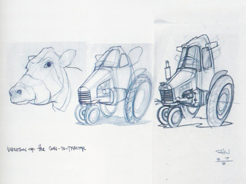
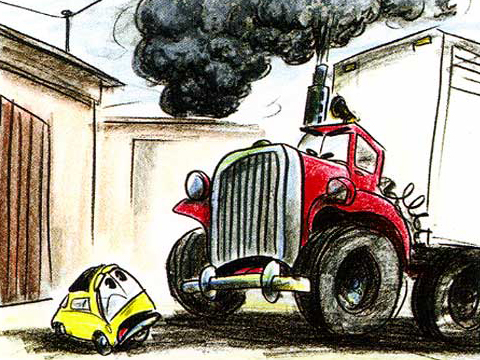

Part of the Animat Habitat™ studio workshop: Character Design for Animation.
Authored by Dane Aleksander.
Continued from The History.
The Personality
Personality is expressed in how a character is revealed through story, where we see how the character reacts in given situations. We use comic strips to show a character's range of emotion, and expression, depicting its ups and downs to further excersize the character design. In dialogue, we avoid having the character answer questions directly, have the character respond as only it would, and consider the timing of the character in its response. We figure out what visceral passion drives a character, and consider making the character more selfish. We all have our own ambitions, desires, motivations, vulnerabilities and so on, and so too should a character in a story. We tend to share traits with a character that we create ― evaluate the differences between a character and you. We want to relate to a story, and to see ourself in story. We consider for whom a character acts as a window into the story.
a/ Cars. (2006) Pixar.
Concept artwork for Cars (2006) shows the early steps taken to infuse personality into machinelike characters ― or characterlike machines. It has become hard to disconnect the imagined faces from everyday vehicles, now that this character concept is mainstream. And while a cow, for example, is not a person, it has a developed relationship with people and, as a result, the animal is an anthropomorphic entity that can impart character traits to a character as well.


© PIXAR, The Art of Cars (2006) | Cow-to-Tractor, Yellow Car